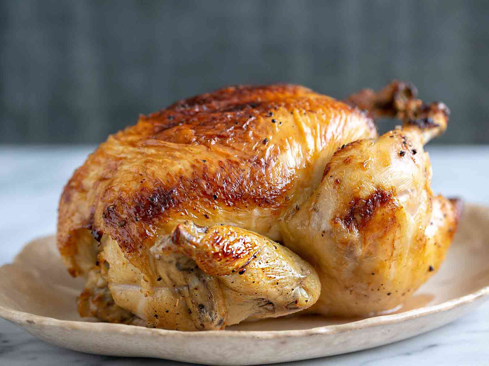

Roast Chicken

The Best Dry-Brined Roast Chicken
This whole roasted chicken recipe is easy to make, has only 6 ingredients (two of which are salt and pepper), and only takes 5 minutes to prepare.
Dinner doesn’t have to be full of bells and whistles. As a matter of fact, sometimes it's better when it’s not.
Ingredients
- 1 (5- to 6-pound) chicken
- 1 lemon
- 2 tablespoons olive oil
- 2 3/4 teaspoons (14 gram) kosher salt (we used Morton's; see recipe note if using another salt)
- 1 1/4 teaspoons freshly cracked pepper
- 1 1/4 teaspoons dried thyme
Steps
- Prepare the pan
- Make the spice rub
- Season the chicken
- Truss the chicken
- Let the chicken air dry for 24 hours
- Prepare the oven
- Add extra seasonings
- Roast and baste the chicken
- Rest the chicken